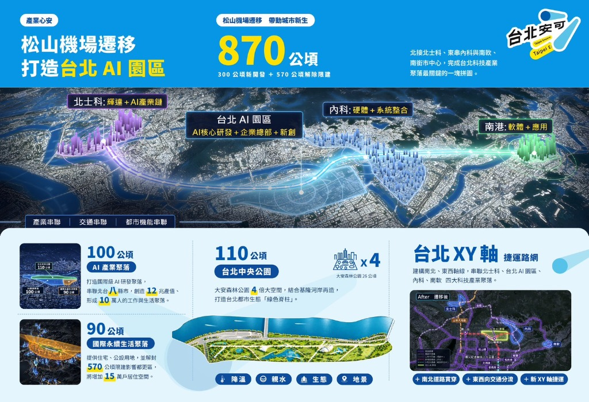

AFTERLIFE 2033
台北 AI 園區「來生」夜店 · 蔣萬安 × 台北安可
🎵 《台北安可》— 台北安可！我們有大巨蛋、輝達、還有生生鮮奶喔！遷移松山機場讓 GD 跟黃仁勳坐機捷來台北只要 36 分鐘！
AI園區
870公頃
都更
75%➔50%
MJ旋轉
1,128圈
−
100%
+
🔊 播放《台北安可》
🎵 台北安可 (2026 蔣萬安官方版)
🎸 台北安可 (謝和弦搖滾版)
🎹 台北安可 2033 (Cyber-Synth)
🗣️ 政見語音
🕺 麥可舞步 ▾
📢 選政見飛字 ▾
🚀 下一條 3D 政見
🙌 萬頭鑽動尖叫
🥛 鮮奶冷霧
🔍 透視結構
🏷️ 標籤
📋 政見與四年政績圖庫
🎥 3D 鏡頭 (可拖曳旋轉):
舞台正面沈浸視角
萬安舞台特寫
Colorfigures 45° 等軸
搖滾區仰角
360° 環繞
🎨 配色:
✏️ 手繪抖動:
📁 2033 台北 AI 園區 × 都更再升級 × gov.taipei 四年施政成果資料庫
點擊任一政見卡片，舞台上的蔣萬安會立即用 3D 對話泡泡喊出該政見，並從畫面外飛入 3D 立體大字！
✕ 關閉
📄 附圖一：都更心安・都更再升級（公辦都更 75%➔50%／大街廓 300%）
📄 附圖二：產業心安・松山機場遷移打造 870 公頃台北 AI 園區

⚡ 點擊觸發舞台 3D 飛字與群眾歡呼：